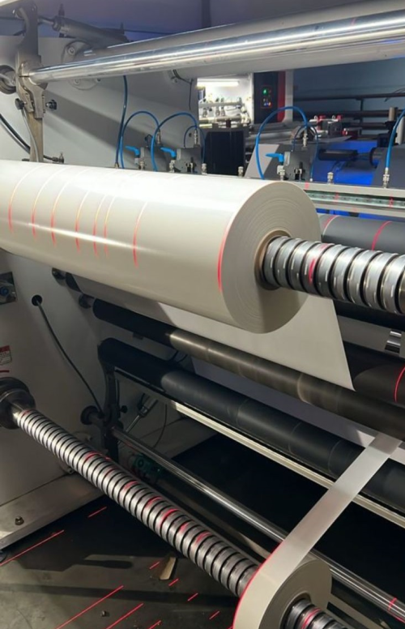
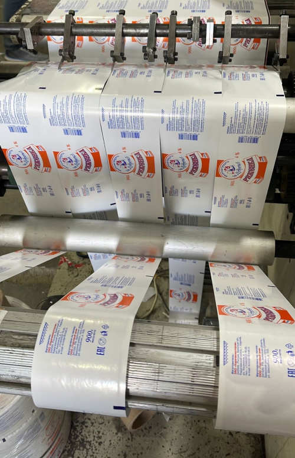

Флексопечать на рекламной упаковке
Изготовление этикеток методом флексографии
Флексография в последние десятилетия стала наиболее популярным способом производства рекламной оригинальной продукции. Флексопечать подразумевает промышленное изготовление гибкого клише и нанесение превосходных изображений с тщательной детализацией на картон, пластик, целлофановые пакеты, бумажную упаковку. Флексопечать на гибкой упаковке производится быстросохнущими разноцветными красителями под небольшим давлением, что позволяет использовать в качестве подложки более широкий спектр материалов, включая алюминиевую фольгу, гофрированный картон. Основа клише для флексографии формируется из мягкого полимерного материала, уплотненной резины, название говорит само за себя, в переводе с латинского «flexus» – согнутый, «grafo» – письмо. Ранее в процессе флексопечати гибкой упаковки применялись токсичные краски, на данный момент используются флуоресцентные, вполне безопасные, пигменты, образующие заданный цвет под воздействием ультрафиолета.
Широкорулонная флексопечать рассчитана на достаточно большой тираж рекламной атрибутики, узкорулонная для производства небольшого объема наклеек, самоклеящейся пленки. Неоспоримое преимущество флексографии – возможность применения в любых сферах торговли, пищевом производстве путем использования экологически безопасного сырья и красителей. Широкорулонная флексопечать значительно снижает себестоимость рекламных материалов за счет крупного тиража и компактного размещения изображения по всей поверхности этикеток без интервалов. Более твердые типографские модели заготовок для широкорулонной флексопечати предназначены для переноски изображений на гладкие глянцевые стороны, мягкие для более четкой детализированной распечатки с клише на любую основу.
Наши специалисты организуют флексографию эксклюзивных наклеек, уникальных стикеров, помогут создать рекламный модуль для широкорулонной флексопечати любой сложности с неограниченным тиражом, полноценным информационным наполнением и уникальным визуальным оформлением.